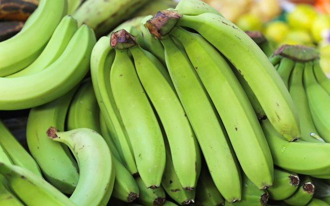

It is a popular Cavendish cultivar from the Philippines, where it is also known as 'Bongolan', 'Balungun' and 'Bangalun' among other synonyms. It is a tall Cavendish considered by Norman Simmonds to be identical to Pisang Masak Hijau', whose name means green (hijau) ripe (masak) banana (pisang) because its fruits remain green at maturity.
Several rarer forms have fruits that turn yellow when ripe. A yellow-fruited form was taken to Central America, along with plants of the Phillipines cultivar 'Lacatan'. The labels got mixed up, leading 'Bungulan' to be known in the Americas as 'Lacatan'. The Philippines 'Lacatan', a non-Cavendish type, is now spelled 'Lakatan'.